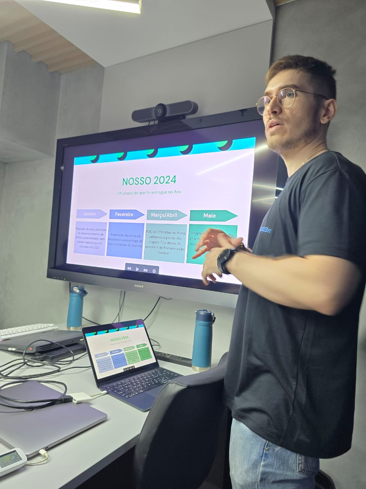

Receba um Diagnóstico de Eficiência Operacional gratuito e descubra onde sua empresa pode ganhar eficiência através de integração de sistemas, automação e tecnologia.

O diagnóstico tecnológico da SMGBit é uma análise inicial gratuita que identifica gargalos operacionais, sistemas desconectados e oportunidades de automação dentro da empresa. Nosso objetivo é entender como sua operação funciona hoje e sugerir melhorias que tragam mais eficiência e produtividade.
Identificamos tarefas repetitivas que podem ser automatizadas.
Verificamos se seus sistemas conversam entre si ou geram retrabalho.
Analisamos planilhas complexas que podem virar automações.
Entendemos como os dados circulam entre sistemas e equipes.
Converse com nossa equipe e descubra oportunidades de melhoria na sua operação.
Falar com Especialista